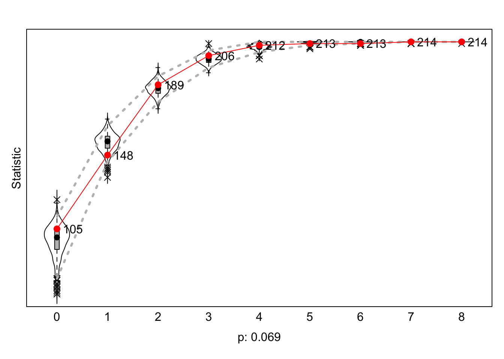
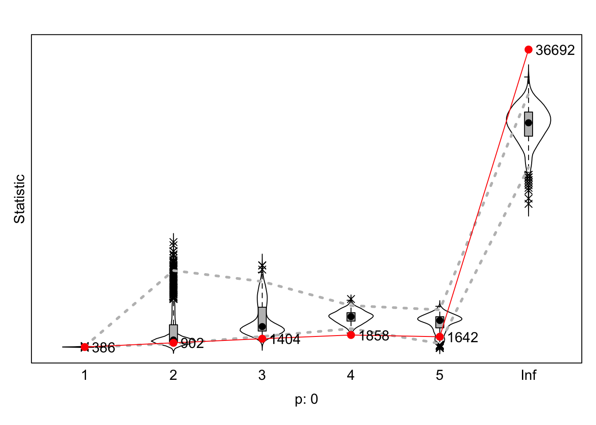

wave_1 <- read_rds("datasets_final/wave_1_first_authors.rds")
wave_2 <- read_rds("datasets_final/wave_2_first_authors.rds")
demographics_hannah <- read_csv("demographics_hannah_final.csv", show_col_types = FALSE)
view(demographics_hannah)
net_soc_array <- read_rds("datasets_final/net_soc_array_first_auth.rds")
Variables
#dependent variable
net <- sienaDependent(net_soc_array)
#independent variable
hoogleraar_covar <- coCovar(demographics_hannah$hoogleraar)
functie_covar <- coCovar(demographics_hannah$functie)
gender_covar <- coCovar(demographics_hannah$perc_female)
country_covar <- coCovar(demographics_hannah$born_in_binary)
white_pass_covar <- coCovar(demographics_hannah$white_or_not)
h_index_covar <- coCovar(demographics_hannah$h_index)
Get Effect
Structure
my_good_data_a <- sienaDataCreate(net, white_pass_covar)
myeff_1 <- getEffects(my_good_data_a)
myeff_1
## effectName include fix test initialValue parm
## 1 basic rate parameter net TRUE FALSE FALSE 2.13235 0
## 2 outdegree (density) TRUE FALSE FALSE -1.68897 0
## 3 reciprocity TRUE FALSE FALSE 0.00000 0
Initial
Description
ifelse(!dir.exists("results"), dir.create("results"), FALSE)
## [1] FALSE
print01Report(my_good_data_a, modelname = "./results/prelimsh*t")
Specify Model
myeff_1 <- includeEffects(myeff_1, sameX, interaction1 = "white_pass_covar")
## effectName include fix test initialValue parm
## 1 same white_pass_covar TRUE FALSE FALSE 0 0
myeff_1 <- includeEffects(myeff_1, egoX, alterX, interaction="white_pass_covar")
## There is no effect with short name egoX,
## alterX,
## "white_pass_covar",
## and with interaction1 = <>, interaction2 = <>, and type = <eval>,
## for dependent variable net .
## See effectsDocumentation() for this effects object.
myeff_1 <- includeEffects(myeff_1, density)
## effectName include fix test initialValue parm
## 1 outdegree (density) TRUE FALSE FALSE -1.68897 0
myeff_1 <- includeEffects(myeff_1, isolateNet, inPop, outAct)
## effectName include fix test initialValue parm
## 1 indegree - popularity TRUE FALSE FALSE 0 0
## 2 outdegree - activity TRUE FALSE FALSE 0 0
## 3 network-isolate TRUE FALSE FALSE 0 0
Estimate Model
myAlgorithm <- sienaAlgorithmCreate(projname = "prelimnshit3")
## If you use this algorithm object, siena07 will create/use an output file prelimnshit3.txt .
mod_1_effects <- siena07(myAlgorithm, data = my_good_data_a, effects = myeff_1, returnDeps = TRUE)
mod_1_effects
## Estimates, standard errors and convergence t-ratios
##
## Estimate Standard Convergence
## Error t-ratio
##
## Rate parameters:
## 0 Rate parameter 3.7471 ( 0.6536 )
##
## Other parameters:
## 1. eval outdegree (density) -3.0189 ( 0.3735 ) 0.2400
## 2. eval reciprocity 2.2786 ( 0.2780 ) -0.2752
## 3. eval indegree - popularity 0.2271 ( 0.0453 ) 0.4375
## 4. eval outdegree - activity -0.0009 ( 0.0599 ) 0.0493
## 5. eval network-isolate 4.4817 ( 0.7680 ) -0.1880
## 6. eval same white_pass_covar 0.1115 ( 0.1657 ) 0.2377
##
## Overall maximum convergence ratio: 0.4579
##
##
## Total of 2493 iteration steps.
A Graph
… make the objects that we can graph-ify…
gofi0 <- sienaGOF(mod_1_effects, IndegreeDistribution, verbose = FALSE, join = TRUE, varName = "net")
gofo0 <- sienaGOF(mod_1_effects, OutdegreeDistribution, verbose = FALSE, join = TRUE, levls = c(0:10, 15, 20),
varName = "net")
gof0.gd <- sienaGOF(mod_1_effects, GeodesicDistribution, cumulative = FALSE, verbose = FALSE, join = TRUE, varName = "net")
… and then graphify!!!
plot(gofi0, main = "")
plot(gofo0, main = "")
## Note: some statistics are not plotted because their variance is 0.
## This holds for the statistics: 9 10 15 20.

plot(gof0.gd, main = "")

LS0tCnRpdGxlOiAiV2VlayA2IgpvdXRwdXQ6IGh0bWxfZG9jdW1lbnQKZGF0ZTogIjIwMjQtMTAtMTQiCi0tLQoKYGBge3IgZnVuY3Rpb25zL3BhY2thZ2VzIHRvIGluY2x1ZGUsIGluY2x1ZGU9RkFMU0V9CnJlcXVpcmUodGlkeXZlcnNlKQpyZXF1aXJlKGlncmFwaCkKcmVxdWlyZShzaGlueSkKcmVxdWlyZShSU2llbmEpCnJlcXVpcmUocm1kZm9ybWF0cykKcmVxdWlyZShwcmV0dHlkb2MpCnJlcXVpcmUoaHJicnRoZW1lcykKcmVxdWlyZSh0aW50KQpyZXF1aXJlKHR1ZnRlKQpyZXF1aXJlKHBzeWNoKQpsaWJyYXJ5KGRhdGEudGFibGUpICAKbGlicmFyeSh4bWwyKQpsaWJyYXJ5KHJ2ZXN0KQpsaWJyYXJ5KHhtbDIpCmxpYnJhcnkoWE1MKQpgYGAKYGBge3Igc2V0dXAgMiB0aGUgZGF0YX0Kd2F2ZV8xIDwtIHJlYWRfcmRzKCJkYXRhc2V0c19maW5hbC93YXZlXzFfZmlyc3RfYXV0aG9ycy5yZHMiKQp3YXZlXzIgPC0gcmVhZF9yZHMoImRhdGFzZXRzX2ZpbmFsL3dhdmVfMl9maXJzdF9hdXRob3JzLnJkcyIpCmRlbW9ncmFwaGljc19oYW5uYWggPC0gcmVhZF9jc3YoImRlbW9ncmFwaGljc19oYW5uYWhfZmluYWwuY3N2Iiwgc2hvd19jb2xfdHlwZXMgPSBGQUxTRSkKdmlldyhkZW1vZ3JhcGhpY3NfaGFubmFoKQpuZXRfc29jX2FycmF5IDwtIHJlYWRfcmRzKCJkYXRhc2V0c19maW5hbC9uZXRfc29jX2FycmF5X2ZpcnN0X2F1dGgucmRzIikKYGBgCmBgYHtyIGZjb2xuZXQsIGluY2x1ZGUgPSBGfQpmY29sbmV0IDwtIGZ1bmN0aW9uKGRhdGEgPSBzY2hvbGFycywgdW5pdmVyc2l0eSA9ICJSVSIsIAogICAgICAgICAgICAgICAgICAgIGRpc2NpcGxpbmUgPSAic29jaW9sb2d5Iiwgd2F2ZXMgPSBsaXN0KGMoMjAxNSwKICAgICAgICAgICAgICAgICAgICAgICAgICAgICAgICAgICAgICAgICAgICAgICAgICAgICAgICAgICAgIDIwMTgpLCBjKDIwMTksIDIwMjMpKSwgdHlwZSA9IGMoImZpcnN0IikpIHsKICAKICAjIHN0ZXAgMQogIGRlbW9ncmFwaGljcyA8LSBkby5jYWxsKHJiaW5kLmRhdGEuZnJhbWUsIGRhdGEkZGVtb2dyYXBoaWNzKQogIGRlbW9ncmFwaGljcyA8LSBkZW1vZ3JhcGhpY3MgJT4lCiAgICBtdXRhdGUoVW5pdmVyc2l0ZWl0MS4yMiA9IHJlcGxhY2UoVW5pdmVyc2l0ZWl0MS4yMiwgaXMubmEoVW5pdmVyc2l0ZWl0MS4yMiksICIiKSwgVW5pdmVyc2l0ZWl0Mi4yMiA9IHJlcGxhY2UoVW5pdmVyc2l0ZWl0Mi4yMiwKICAgICAgICAgICAgICAgICAgICAgICAgICAgICAgICAgICAgICAgICAgICAgICAgICAgICAgICAgICAgICAgICAgICAgICAgICAgICAgICAgICAgICAgICAgICAgICAgICAgICAgICAgICAgICAgICBpcy5uYShVbml2ZXJzaXRlaXQyLjIyKSwgIiIpLCBVbml2ZXJzaXRlaXQxLjI0ID0gcmVwbGFjZShVbml2ZXJzaXRlaXQxLjI0LCBpcy5uYShVbml2ZXJzaXRlaXQxLjI0KSwKICAgICAgICAgICAgICAgICAgICAgICAgICAgICAgICAgICAgICAgICAgICAgICAgICAgICAgICAgICAgICAgICAgICAgICAgICAgICAgICAgICAgICAgICAgICAgICAgICAgICAgICAgICAgICAgICAgICAgICAgICAgICAgICAgICAgICAgICAgICAgICAgICAgICAgICAgICAgICAgICAgICAgICAgICAiIiksIFVuaXZlcnNpdGVpdDIuMjQgPSByZXBsYWNlKFVuaXZlcnNpdGVpdDIuMjQsIGlzLm5hKFVuaXZlcnNpdGVpdDIuMjQpLCAiIiksIGRpc2NpcGxpbmUuMjIgPSByZXBsYWNlKGRpc2NpcGxpbmUuMjIsCiAgICAgICAgICAgICAgICAgICAgICAgICAgICAgICAgICAgICAgICAgICAgICAgICAgICAgICAgICAgICAgICAgICAgICAgICAgICAgICAgICAgICAgICAgICAgICAgICAgICAgICAgICAgICAgICAgICAgICAgICAgICAgICAgICAgICAgICAgICAgICAgICAgICAgICAgICAgICAgICAgICAgICAgICAgICAgICAgICAgICAgICAgICAgICAgICAgICAgICAgICAgICAgICAgICAgICAgICAgICAgICAgICAgICAgICAgICAgICAgICAgICAgICAgICAgICAgICAgICAgICAgICAgICAgICAgICBpcy5uYShkaXNjaXBsaW5lLjIyKSwgIiIpLCBkaXNjaXBsaW5lLjI0ID0gcmVwbGFjZShkaXNjaXBsaW5lLjI0LCBpcy5uYShkaXNjaXBsaW5lLjI0KSwgIiIpKQogIAogIHNhbXBsZSA8LSB3aGljaCgoZGVtb2dyYXBoaWNzJFVuaXZlcnNpdGVpdDEuMjIgJWluJSB1bml2ZXJzaXR5IHwgZGVtb2dyYXBoaWNzJFVuaXZlcnNpdGVpdDIuMjIgJWluJQogICAgICAgICAgICAgICAgICAgICB1bml2ZXJzaXR5IHwgZGVtb2dyYXBoaWNzJFVuaXZlcnNpdGVpdDEuMjQgJWluJSB1bml2ZXJzaXR5IHwgZGVtb2dyYXBoaWNzJFVuaXZlcnNpdGVpdDIuMjQgJWluJQogICAgICAgICAgICAgICAgICAgICB1bml2ZXJzaXR5KSAmIChkZW1vZ3JhcGhpY3MkZGlzY2lwbGluZS4yMiAlaW4lIGRpc2NpcGxpbmUgfCBkZW1vZ3JhcGhpY3MkZGlzY2lwbGluZS4yNCAlaW4lIGRpc2NpcGxpbmUpKQogIAogIGRlbW9ncmFwaGljc19zb2MgPC0gZGVtb2dyYXBoaWNzW3NhbXBsZSwgXQogIHNjaG9sYXJzX3NlbCA8LSBsYXBwbHkoc2Nob2xhcnMsICJbIiwgc2FtcGxlKQogIAogICMgc3RlcCAyCiAgaWRzIDwtIGRlbW9ncmFwaGljc19zb2MkYXVfaWQKICBud2F2ZXMgPC0gbGVuZ3RoKHdhdmVzKQogIG5ldHMgPC0gYXJyYXkoMCwgZGltID0gYyhud2F2ZXMsIGxlbmd0aChpZHMpLCBsZW5ndGgoaWRzKSksIGRpbW5hbWVzID0gbGlzdCh3YXZlID0gMTpud2F2ZXMsIGlkcywKICAgICAgICAgICAgICAgICAgICAgICAgICAgICAgICAgICAgICAgICAgICAgICAgICAgICAgICAgICAgICAgICAgICAgICAgICAgICAgaWRzKSkKICBkaW1uYW1lcyhuZXRzKQogIAogICMgc3RlcCAzCiAgZGZfd29ya3MgPC0gdGliYmxlKHdvcmtzX2lkID0gdW5saXN0KGxhcHBseShzY2hvbGFyc19zZWwkd29yaywgZnVuY3Rpb24obCkgbCRpZCkpLCB3b3Jrc19hdXRob3IgPSB1bmxpc3QobGFwcGx5KHNjaG9sYXJzX3NlbCR3b3JrLAogICAgICAgICAgICAgICAgICAgICAgICAgICAgICAgICAgICAgICAgICAgICAgICAgICAgICAgICAgICAgICAgICAgICAgICAgICAgICAgICAgICAgICAgICAgICAgICAgICAgICAgICAgICAgICAgICBmdW5jdGlvbihsKSBsJGF1dGhvciksIHJlY3Vyc2l2ZSA9IEZBTFNFKSwgd29ya3NfeWVhciA9IHVubGlzdChsYXBwbHkoc2Nob2xhcnNfc2VsJHdvcmssIGZ1bmN0aW9uKGwpIGwkcHVibGljYXRpb25feWVhciksCiAgICAgICAgICAgICAgICAgICAgICAgICAgICAgICAgICAgICAgICAgICAgICAgICAgICAgICAgICAgICAgICAgICAgICAgICAgICAgICAgICAgICAgICAgICAgICAgICAgICAgICAgICAgICAgICAgICAgICAgICAgICAgICAgICAgICAgICAgICAgICAgICAgICAgICAgICAgICAgICAgICAgICAgICAgICAgICAgIHJlY3Vyc2l2ZSA9IEZBTFNFKSkKICAKICBkZl93b3JrcyA8LSBkZl93b3Jrc1shZHVwbGljYXRlZChkZl93b3JrcyksIF0KICAKICAjIHN0ZXAgNAogIGlmICh0eXBlID09ICJmaXJzdCIpIHsKICAgIGZvciAoaiBpbiAxOm53YXZlcykgewogICAgICBkZl93b3Jrc193IDwtIGRmX3dvcmtzW2RmX3dvcmtzJHdvcmtzX3llYXIgPj0gd2F2ZXNbW2pdXVsxXSAmIGRmX3dvcmtzJHdvcmtzX3llYXIgPD0gd2F2ZXNbW2pdXVsyXSwKICAgICAgXQogICAgICBmb3IgKGkgaW4gMTpucm93KGRmX3dvcmtzX3cpKSB7CiAgICAgICAgZWdvIDwtIGRmX3dvcmtzX3ckd29ya3NfYXV0aG9yW2ldW1sxXV0kYXVfaWRbMV0KICAgICAgICBhbHRlcnMgPC0gZGZfd29ya3NfdyR3b3Jrc19hdXRob3JbaV1bWzFdXSRhdV9pZFstMV0KICAgICAgICBpZiAoc3VtKGlkcyAlaW4lIGVnbykgPiAwICYgc3VtKGlkcyAlaW4lIGFsdGVycykgPiAwKSB7CiAgICAgICAgICBuZXRzW2osIHdoaWNoKGlkcyAlaW4lIGVnbyksIHdoaWNoKGlkcyAlaW4lIGFsdGVycyldIDwtIDEKICAgICAgICB9CiAgICAgIH0KICAgIH0KICB9CiAgCiAgaWYgKHR5cGUgPT0gImxhc3QiKSB7CiAgICBmb3IgKGogaW4gMTpud2F2ZXMpIHsKICAgICAgZGZfd29ya3NfdyA8LSBkZl93b3Jrc1tkZl93b3JrcyR3b3Jrc195ZWFyID49IHdhdmVzW1tqXV1bMV0gJiBkZl93b3JrcyR3b3Jrc195ZWFyIDw9IHdhdmVzW1tqXV1bMl0sCiAgICAgIF0KICAgICAgZm9yIChpIGluIDE6bnJvdyhkZl93b3Jrc193KSkgewogICAgICAgIGVnbyA8LSByZXYoZGZfd29ya3NfdyR3b3Jrc19hdXRob3JbaV1bWzFdXSRhdV9pZClbMV0KICAgICAgICBhbHRlcnMgPC0gcmV2KGRmX3dvcmtzX3ckd29ya3NfYXV0aG9yW2ldW1sxXV0kYXVfaWQpWy0xXQogICAgICAgIGlmIChzdW0oaWRzICVpbiUgZWdvKSA+IDAgJiBzdW0oaWRzICVpbiUgYWx0ZXJzKSA+IDApIHsKICAgICAgICAgIG5ldHNbaiwgd2hpY2goaWRzICVpbiUgZWdvKSwgd2hpY2goaWRzICVpbiUgYWx0ZXJzKV0gPC0gMQogICAgICAgIH0KICAgICAgfQogICAgfQogIH0KICAKICBpZiAodHlwZSA9PSAiYWxsIikgewogICAgZm9yIChqIGluIDE6bndhdmVzKSB7CiAgICAgIGRmX3dvcmtzX3cgPC0gZGZfd29ya3NbZGZfd29ya3Mkd29ya3NfeWVhciA+PSB3YXZlc1tbal1dWzFdICYgZGZfd29ya3Mkd29ya3NfeWVhciA8PSB3YXZlc1tbal1dWzJdLAogICAgICBdCiAgICAgIGZvciAoaSBpbiAxOm5yb3coZGZfd29ya3NfdykpIHsKICAgICAgICBlZ29zIDwtIGRmX3dvcmtzX3ckd29ya3NfYXV0aG9yW2ldW1sxXV0kYXVfaWQKICAgICAgICBpZiAoc3VtKGlkcyAlaW4lIGVnb3MpID4gMCkgewogICAgICAgICAgbmV0c1tqLCB3aGljaChpZHMgJWluJSBlZ29zKSwgd2hpY2goaWRzICVpbiUgZWdvcyldIDwtIDEKICAgICAgICB9CiAgICAgIH0KICAgIH0KICB9CiAgb3V0cHV0IDwtIGxpc3QoKQogIG91dHB1dCRkYXRhIDwtIHNjaG9sYXJzX3NlbAogIG91dHB1dCRuZXRzIDwtIG5ldHMKICByZXR1cm4ob3V0cHV0KQp9CgpgYGAKCiMgVmFyaWFibGVzIAoKYGBge3IgdmFyaWFibGVzIGRlZmluaXRpb259CiNkZXBlbmRlbnQgdmFyaWFibGUgCm5ldCA8LSBzaWVuYURlcGVuZGVudChuZXRfc29jX2FycmF5KQoKI2luZGVwZW5kZW50IHZhcmlhYmxlIApob29nbGVyYWFyX2NvdmFyIDwtICBjb0NvdmFyKGRlbW9ncmFwaGljc19oYW5uYWgkaG9vZ2xlcmFhcikKZnVuY3RpZV9jb3ZhciA8LSBjb0NvdmFyKGRlbW9ncmFwaGljc19oYW5uYWgkZnVuY3RpZSkKZ2VuZGVyX2NvdmFyIDwtIGNvQ292YXIoZGVtb2dyYXBoaWNzX2hhbm5haCRwZXJjX2ZlbWFsZSkKY291bnRyeV9jb3ZhciA8LSBjb0NvdmFyKGRlbW9ncmFwaGljc19oYW5uYWgkYm9ybl9pbl9iaW5hcnkpCndoaXRlX3Bhc3NfY292YXIgPC0gY29Db3ZhcihkZW1vZ3JhcGhpY3NfaGFubmFoJHdoaXRlX29yX25vdCkKaF9pbmRleF9jb3ZhciA8LSBjb0NvdmFyKGRlbW9ncmFwaGljc19oYW5uYWgkaF9pbmRleCkKYGBgCgojIEdldCBFZmZlY3QgU3RydWN0dXJlIAoKYGBge3IgZ29vZCBkYXRhfQpteV9nb29kX2RhdGFfYSA8LSBzaWVuYURhdGFDcmVhdGUobmV0LCB3aGl0ZV9wYXNzX2NvdmFyKQpteWVmZl8xIDwtIGdldEVmZmVjdHMobXlfZ29vZF9kYXRhX2EpCm15ZWZmXzEKYGBgCgojIEluaXRpYWwgRGVzY3JpcHRpb24KCmBgYHtyfQppZmVsc2UoIWRpci5leGlzdHMoInJlc3VsdHMiKSwgZGlyLmNyZWF0ZSgicmVzdWx0cyIpLCBGQUxTRSkKcHJpbnQwMVJlcG9ydChteV9nb29kX2RhdGFfYSwgbW9kZWxuYW1lID0gIi4vcmVzdWx0cy9wcmVsaW1zaCp0IikgIApgYGAKCiMgU3BlY2lmeSBNb2RlbCAKCmBgYHtyfQpteWVmZl8xIDwtIGluY2x1ZGVFZmZlY3RzKG15ZWZmXzEsIHNhbWVYLCBpbnRlcmFjdGlvbjEgPSAid2hpdGVfcGFzc19jb3ZhciIpCm15ZWZmXzEgPC0gaW5jbHVkZUVmZmVjdHMobXllZmZfMSwgZWdvWCwgYWx0ZXJYLCBpbnRlcmFjdGlvbj0id2hpdGVfcGFzc19jb3ZhciIpCm15ZWZmXzEgPC0gaW5jbHVkZUVmZmVjdHMobXllZmZfMSwgZGVuc2l0eSkKbXllZmZfMSA8LSBpbmNsdWRlRWZmZWN0cyhteWVmZl8xLCBpc29sYXRlTmV0LCBpblBvcCwgb3V0QWN0KQoKYGBgCgojIEVzdGltYXRlIE1vZGVsIAoKYGBge3J9Cm15QWxnb3JpdGhtIDwtIHNpZW5hQWxnb3JpdGhtQ3JlYXRlKHByb2puYW1lID0gInByZWxpbW5zaGl0MyIpCm1vZF8xX2VmZmVjdHMgPC0gc2llbmEwNyhteUFsZ29yaXRobSwgZGF0YSA9IG15X2dvb2RfZGF0YV9hLCBlZmZlY3RzID0gbXllZmZfMSwgcmV0dXJuRGVwcyA9IFRSVUUpCm1vZF8xX2VmZmVjdHMKYGBgCiMgQSBHcmFwaAoKYGBge3IgZ2VvZGVzaWMsIGluY2x1ZGUgPSBGfQojIHNlZSBoZXJlOiA/J3NpZW5hR09GLWF1eGlsaWFyeScKCiMgVGhlIGdlb2Rlc2ljIGRpc3RyaWJ1dGlvbiBpcyBub3QgYXZhaWxhYmxlIGZyb20gd2l0aGluIFJTaWVuYSwgYW5kIHRoZXJlZm9yZSBpcyBjb3BpZWQgZnJvbSB0aGUKIyBoZWxwIHBhZ2Ugb2Ygc2llbmFHT0YtYXV4aWxpYXJ5OgoKIyBHZW9kZXNpY0Rpc3RyaWJ1dGlvbiBjYWxjdWxhdGVzIHRoZSBkaXN0cmlidXRpb24gb2Ygbm9uLWRpcmVjdGVkIGdlb2Rlc2ljIGRpc3RhbmNlczsgc2VlCiMgP3NuYTo6Z2VvZGlzdCBUaGUgZGVmYXVsdCBmb3IgXGNvZGV7bGV2bHN9IHJlZmxlY3RzIHRoZSB1c3VhbCBwaGVub21lbm9uIHRoYXQgZ2VvZGVzaWMgZGlzdGFuY2VzCiMgbGFyZ2VyIHRoYW4gNSBkbyBub3QgZGlmZmVyIGFwcHJlY2lhYmx5IHdpdGggcmVzcGVjdCB0byBpbnRlcnByZXRhdGlvbi4gIE5vdGUgdGhhdCB0aGUgbGV2ZWxzIG9mCiMgdGhlIHJlc3VsdCBhcmUgbmFtZWQ7IHRoZXNlIG5hbWVzIGFyZSB1c2VkIGluIHRoZSBcY29kZXtwbG90fSBtZXRob2QuCkdlb2Rlc2ljRGlzdHJpYnV0aW9uIDwtIGZ1bmN0aW9uKGksIGRhdGEsIHNpbXMsIHBlcmlvZCwgZ3JvdXBOYW1lLCB2YXJOYW1lLCBsZXZscyA9IGMoMTo1LCBJbmYpLCBjdW11bGF0aXZlID0gVFJVRSwKICAgIC4uLikgewogICAgeCA8LSBuZXR3b3JrRXh0cmFjdGlvbihpLCBkYXRhLCBzaW1zLCBwZXJpb2QsIGdyb3VwTmFtZSwgdmFyTmFtZSkKICAgIHJlcXVpcmUoc25hKQogICAgYSA8LSBzbmE6Omdlb2Rpc3Qoc3ltbWV0cml6ZSh4KSkkZ2Rpc3QKICAgIGlmIChjdW11bGF0aXZlKSB7CiAgICAgICAgZ2RpIDwtIHNhcHBseShsZXZscywgZnVuY3Rpb24oaSkgewogICAgICAgICAgICBzdW0oYSA8PSBpKQogICAgICAgIH0pCiAgICB9IGVsc2UgewogICAgICAgIGdkaSA8LSBzYXBwbHkobGV2bHMsIGZ1bmN0aW9uKGkpIHsKICAgICAgICAgICAgc3VtKGEgPT0gaSkKICAgICAgICB9KQogICAgfQogICAgbmFtZXMoZ2RpKSA8LSBhcy5jaGFyYWN0ZXIobGV2bHMpCiAgICBnZGkKfQoKIyBUaGUgZm9sbG93aW5nIGZ1bmN0aW9uIGlzIHRha2VuIGZyb20gdGhlIGhlbHAgcGFnZSBmb3Igc2llbmFUZXN0Cgp0ZXN0YWxsIDwtIGZ1bmN0aW9uKGFucykgewogICAgZm9yIChpIGluIHdoaWNoKGFucyR0ZXN0KSkgewogICAgICAgIHNjdCA8LSBzY29yZS5UZXN0KGFucywgaSkKICAgICAgICBjYXQoYW5zJHJlcXVlc3RlZEVmZmVjdHMkZWZmZWN0TmFtZVtpXSwgIlxuIikKICAgICAgICBwcmludChzY3QpCiAgICB9CiAgICBpbnZpc2libGUoc2NvcmUuVGVzdChhbnMpKQp9CmBgYAoKLi4uIG1ha2UgdGhlIG9iamVjdHMgdGhhdCB3ZSBjYW4gZ3JhcGgtaWZ5Li4uXAoKYGBge3IgYSBncmFwaH0KZ29maTAgPC0gc2llbmFHT0YobW9kXzFfZWZmZWN0cywgSW5kZWdyZWVEaXN0cmlidXRpb24sIHZlcmJvc2UgPSBGQUxTRSwgam9pbiA9IFRSVUUsIHZhck5hbWUgPSAibmV0IikKZ29mbzAgPC0gc2llbmFHT0YobW9kXzFfZWZmZWN0cywgT3V0ZGVncmVlRGlzdHJpYnV0aW9uLCB2ZXJib3NlID0gRkFMU0UsIGpvaW4gPSBUUlVFLCBsZXZscyA9IGMoMDoxMCwgMTUsIDIwKSwKICAgIHZhck5hbWUgPSAibmV0IikKZ29mMC5nZCA8LSBzaWVuYUdPRihtb2RfMV9lZmZlY3RzLCBHZW9kZXNpY0Rpc3RyaWJ1dGlvbiwgY3VtdWxhdGl2ZSA9IEZBTFNFLCB2ZXJib3NlID0gRkFMU0UsIGpvaW4gPSBUUlVFLCB2YXJOYW1lID0gIm5ldCIpCmBgYAoKLi4uIGFuZCB0aGVuIGdyYXBoaWZ5ISEhXApgYGB7cn0KcGxvdChnb2ZpMCwgbWFpbiA9ICIiKQpwbG90KGdvZm8wLCBtYWluID0gIiIpCnBsb3QoZ29mMC5nZCwgbWFpbiA9ICIiKQpgYGAKCgo=